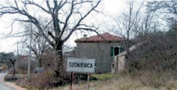
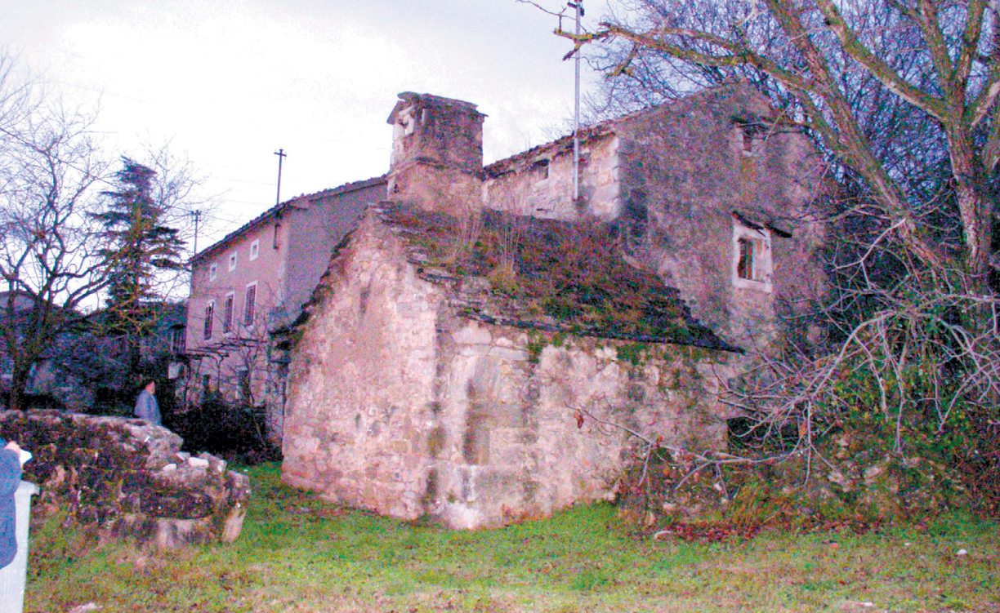
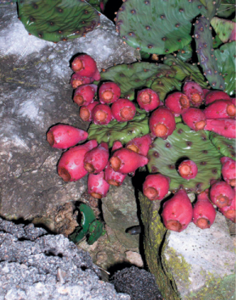
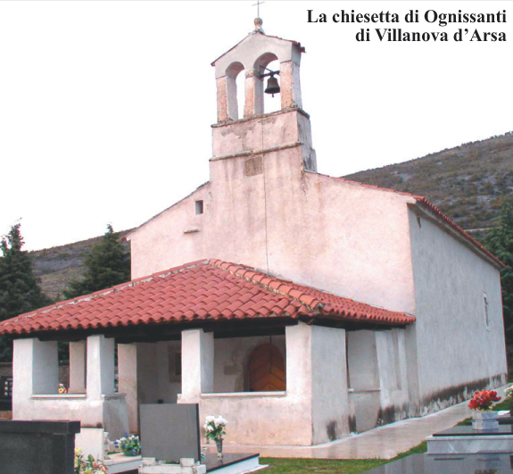
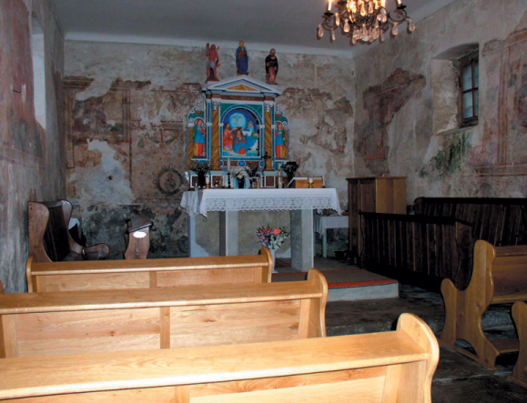
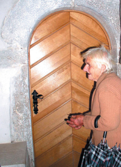
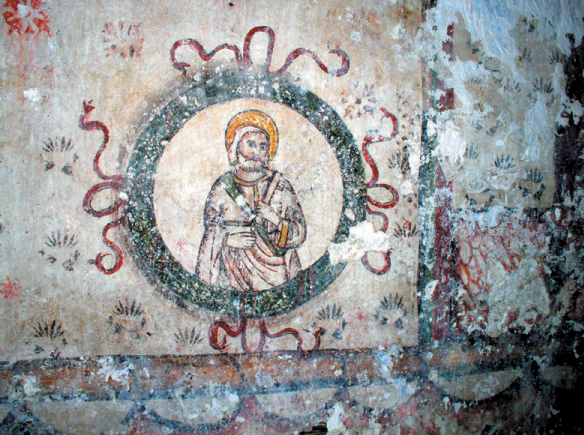
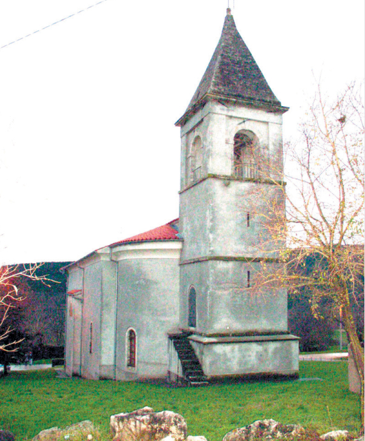
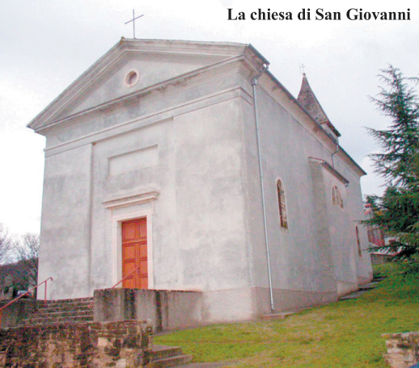

Cicci, ciribiri, istrorumeni: Nomi diversi per indicare una popolazione oggi purtroppo quasi estinta
 Cicci, ciribiri, istrorumeni: nomi diversi per indicare una popolazione oggi purtroppo quasi estinta, ma che secoli addietro viveva in un’ampia, vasta zona dell’Istria interna. In quella che ancora oggi e proprio per questo motivo tutti chiamiamo Cicceria, fin su a Opicina, Banne, Trebiciano, ma anche molto più in giù, sotto le falde del versante occidentale della catena dei Caldiera, dalla piana di Bogliuno fino a Cepich, e in passato ancora più in là, sotto, quasi fino ad Albona e più in su, nell’entroterra, fin quasi a Pisino. Così era, racconta la storia, ancora nel 1800. Poi, con il passar degli anni, quei confini andarono restringendosi e di pari passo andò riducendosi la consistenza numerica di quel popolo. Al punto che i pochissimi istriani discendenti di quelle genti giunte in Istria dalla lontana Romania, oggi vivono ancora e soltanto in due piccole enclavi. L’una è quella che gravita intorno ai villaggi di Mune e Seiane. L’altra invece è nella Val d’Arsa e corre lungo le sponde del torrente Bogliuno, sotto le falde boscose e d’inverno quasi sempre innevate del Monte Maggiore. Tra il 1818 e il 1894 lo storiografo albonese Tomaso Luciani, archivista ai Frari di Venezia e più tardi Giuseppe Lazzarini, agronomo e scrittore, vissuto all’inizio del XX secolo, che ebbe il merito tra l’altro di aver fatto prosciugare il lago malarico di Cepich, ipotizzarono che gli istrorumeni di queste località fossero i successori diretti dei legionari romani. Altri sostengono che, come i montenegrini insediatisi a Peroi, gli istrorumeni siano giunti in Istria cercando riparo, ai tempi delle invasioni ottomane, in territorio veneziano, dapprima in Dalmazia e poi in Istria. La maggioranza degli studiosi fa risalire l'arrivo dei romeni in Istria verso la metà del XV secolo.
Ancora oggi vengono detti cicci solamente gli abitanti di Mune e Seiane, mentre acquisiscono il nome di ciribiri gli istrorumeni che popolano i villaggi intorno a Susnieviza. Questa seconda definizione deriva probabilmente dalla loro parlata anche se nessuna tesi appare credibile sull'origine del nome cicio, che, nonostante abbia denominato un territorio era ritenuto dai popoli circostanti termine con il quale si è sempre voluto indicare in Istria e a Fiume il diverso, per gli usi, i costumi e la parlata differenti.
Nella seconda metà del 1700 e fino agli inizi del XIX secolo l'economia degli istrorumeni di questi villaggi si basava sull’agricoltura e sull’allevamento del bestiame, suprattutto sulla pastorizia, sulla produzione di lana e di formaggio, carbone vegetale, doghe e lavori di legno, o sul commercio di aceto di vino puro, che essi acquistavano da varie località istriane e poi rivendevano in tutto l’impero austriaco o alla vendita del sale. Ricorda infatti lo storico Pietro Kandler che "il cicio davasi sovratutto ai trasporto del sale dall'Istria marittima al Carnio". All’inizio del secolo scorso molti erano gli uomini che lavoravano a Fiume nel porto, nei cantieri e nelle carpenterie di ferro. Pochi si azzardavano a intraprendere la carriera marittima o a fare i marinai ed è probabilmente per questo motivo che entrò in uso il noto detto "cicio no xe per barca," al quale si ricorre ancora oggi comunemente per canzonare chi non dimostra di avere molta abilità per questo genere di mestieri. Le donne invece facevano spesso le domestiche presso ricche famiglie del capoluogo del Quarnero o ad Abbazia.
 Quando alla fine del 1800 alcuni studiosi romeni iniziarono a interessarsi di questa minoranza etnica con l’intento di aiutarla a conservare un legame con le sue radici, la situazione era già gravemente compromessa: le famiglie istrorumene vivevano in villaggi molto distanti gli uni dagli altri, non avevano alcun riconoscimento giuridico e non esisteva una scuola in cui poter insegnare alle nuove generazioni la lingua materna. Poi a Susnieviza si riuscì ad istituirne una che per qualche anno funzionò. Ma scoppiò la II Guerra mondiale e verso la sua fine la comunità istroromena si vide infliggere un duro colpo dai nazisti che per rappresaglia alle azioni partigiane distrussero villaggi, case e chiese ovunque in Istria e anche a Valdarsa. Anche quella scuola, tanto voluta dai ciribiri, cessò di esistere e l’idioma istrorumeno si continuò a parlare soltanto tra le poche famiglie sopravvissute agli eventi bellici. Ma sempre meno. Oggi tra i discendenti di quei nuclei pochissimi sono coloro ancora in grado di esprimersi o di comprendere la parlata dei propri antenati. Quanti popolano ancora i villaggi di Brdo, Belaj, Lettaj, Grobnik, Jasenovik, Cigari, Kontuši, Kostrcani, Šušnjevica, Nova Vas detta anche Noselo o Villanova, sono ben pochi. Da qui tantissima gente è emigrata all’estero, molti oltre oceano. Altri si sono trasferiti nelle grandi città. In questi villaggi fatti di rari casolari rannicchiati l’uno sull’altro, sono rimasti a vivere pochissimi anziani.
Nella circoscrizione di Susnieviza, detta anche Frascati d'Istria o Valdarsa, vivevano nel 1946 millecinquecento persone. Nel 1988 erano circa cinquecento. Oggi saranno forse ridotte alla metà. Stando ai dati del censimento del 1991 in tutta la Croazia solamente 810 persone si erano dichiarate di nazionalità romena.
 Anni or sono era stata istuituita un’Associazione che si riprometteva di tutelare e conservare l’identità culturale di questa ormai già esigua minoranza che con l’andar degli anni ha pagato lo scotto con il rischio di una quasi totale assimilazione e della completa scomparsa della parlata.
"Oggi – vi dirà la pochissima gente rimasta a vivere qui – siamo probabilmente più numerosi a New York che a Susnieviza, trapiantati dalla campagna alle metropoli". Uno sradicamento che purtroppo minaccia di cancellare dalla carta demografica dell’Istria multietnica e multiculturale, una componente esclusiva, unica e forse oramai irrecuperabile.
Chi ha scelto di rimanere a vivere qui, un’abitazione nuova se l’è costruita, ma sono casi rari e sporadici. Le altre sono edifici rustici disabitati: vecchie case fatte tutte di solidissima resistente pietra grigia, ma deserte, vuote e abbandonate. Una tra queste – che ci dicono sia la più vecchia del paese e che si appoggia a quella che un tempo era la stalla di un’altra costruzione meno antica – sembra uscita dal fotogramma di un film di Walt Disney. È piccolissima ed è integralmente di sasso. Ha il tetto ricoperto da spesse e pesanti lastre di roccia. Ha un’unica entrata, accanto alla quale c’è una specie di panca, ovviamente anche questa di sasso. Salvo una minuscola apertura rettangolare ricavata accanto all’accesso praticamente non ha altre finestre. Anche il comignolo ispira infinita fantasia. Peccato che non fumi. Dentro un focolare esisterà ancora, ma sarà da decennni che nessuno l’ha riacceso. Anche quella, come tante altre case del paese, è disabitata. La differenza è che questa non è un rudere. Ha mura così solide e fondamenta e struttura sono talmente compatte da indurci a credere che sia effettivamente indistruttibile. Sembra un dolmen. Sarà anche una costruzione primitiva, ma quella nessun terremoto riuscirebbe a smuoverla. Tutte le altre sono case abbandonate e oramai ridotte a ruderi. Un destino ingrato sembra averle condannate a implorare in eterno, come anime in pena, una salvezza che non verrà mai più. Quasi come in un girone infernale in cui, al posto delle lingue di fuoco, Dante ha voluto affidare il compito ingrato di soffocare l’atroce grido di dolore di questi insoliti dannati di pietra, a infiniti e invincibili grovigli d’edera. Da qui quasi tutti ormai se ne sono andati. Via. Lontano. Troppo lontano. Talmente lontano che nessuno sarà mai più in grado di udire le strazianti urla di terrore che invano, inutilmente, queste case abbandonate sembrano invocare: in una lingua dimenticata, che nessuno sembra più capire, per implorare salvezza.
"Hos opus fecit magister Biaxio Raguxeo"
 Appena fuori dal paesino di Villanova d’Arsa, in istrorumeno Noselo, in croato Nova Vas, in direzione di Jesenovik il cimitero del paese e una piccola cappella con loggia. È la chiesetta di Santo Spirito. Sopra il minuscolo portale, un'iscrizione ricorda che fu ricostruita nel 1609 e ristrutturata nel 1793. Ma è stata rinnovata anche di recente, grazie a oboli e contributi inviati da ogni parte del mondo tra il 1996 e il 1997, dagli istrorumeni nati da queste parti e poi emigrati in Australia, negli Stati Uniti, in Germania.
 Vorremmo vederla anche al suo interno perché conserva un raro altarino in legno raffigurante l’Incoronazione della Vergine e degli antichi affreschi del XVI secolo, opera del maestro Biagio Raguseo. Ma la porta è chiusa. Siamo sul punto di andarcene, quand’ecco che lungo la strada principale che attraversa il paese vediamo venirci incontro un’anziana nonnina canuta dalla pelle di carnagione scura e dal naso aquilino. È lei che ha le chiavi.
 "Vi ho notati dalla finestra e ho capito che volete visitarla" – ci spiega in un dialetto che riusciamo a comprendere con estrema difficoltà Marija Jurman. Porta un cognome assai comune da queste parti. Tipico degli istrorumeni come lo sono i cognomi Kontuš, Mikleuš, Bortul, Skrobe.
Spalanca la porticina della cappella e accende le luci. Uno strano lampadario in bronzo e ferro battuto illumina la loggetta esterna. All’interno invece ce n’è uno di quelli a candeliere, a otto braccia, con le gocce di cristallo ambrate. L’altare è una nicchietta a timpano. Bella ma dai colori assai kitch: dominano un rosso e un’azzurro fortissimi, forse sono acrilici.  Dubitiamo che ad usare quegli strani toni di elettrizzante colore sia stata la mano di un vero artista. La sequenza di affreschi che decora tutte e quattro le pareti comunque, anche se non integralmente molto ben conservata, è più che apprezzabile. In uno dei riquadri una splendida scena dell’Annunciazione; in un altro l’Adorazione dei Re Magi con un seguito di musici e soldati. Racchiuse in dei medaglioni poi, riconosciamo le figure degli apostoli e dei profeti. In una di queste cornici notiamo la firma dell'autore: "Hos opus fecit magister Biaxio Raguxeo". Nessuno ha mai saputo spiegare come mai quest’abile pittore sia capitato in Istria per dipingere questa piccola chiesa. Chissà forse era anche lui uno di quei rumeni che arrivarono qui nel '600, in fuga dinanzi ai turchi.
La parrocchiale di San Giovanni
 La chiesa parrocchiale di Susnieviza, dedicata a San Giovanni, si trova su un rialzo all'inizio del paese, verso la strada che scende da Vragna, a poche centinaia di metri di distanza dal piccolo cimitero del posto in cui c’è un'antica cappelletta mortuaria rinnovata di recente e consacrata a San Silvestro papa.
 Quella di San Giovanni è una chiesa piuttosto grande, a pianta rettangolare e a navata unica. Fu costruita nel 1838, al posto di una chiesa più antica ed è forse più interessante sul retro che dalla parte della facciata principale, semplice, fatta a timpano, in quanto l'abside circolare esterna si addossa a un campanile, alto appena una quindicina di metri, che finisce a torre quadrata a cuspide. La cella campanaria ha delle grandi finestre monofore. Alla chiesa si accede attraverso due gradinate laterali che più in alto si congiungono in una scalinata centrale unica. All’interno l’altare maggiore, decorato da due statue in legno dei Santi Pietro e Paolo e da una pala d’altare che raffigura il Battesimo di Gesù, è rialzato rispetto al nudo pavimento di pietra. Gli altri altari sono dedicati alla Beata Vergine, a San Nicolò, a San Silvestro e al Sacro Cuore di Gesù.
Il maestro Andrea Glavina
Nel 1893 il professor Teodor Burada, glottologo dell'università di Iasi giunto in Istria per studiare la lingua dei cici e dei ciribiri, individuò in Andrea Glavina, nato nel 1881 a Susnieviza, la persona ideale alla quale affidare l’arduo incarico di portare avanti il discorso del mantenimento in vita della parlata locale. Dopo aver ultimato gli studi in Romania all’inizio del XX secolo Glavina ritornò in Istria e, come Burada aveva sperato, si dedicò anima e corpo all'insegnamento della lingua dei suoi padri alle nuove generazioni. Nel 1905 Glavina, che era anche insegnante di italiano, pubblicò il "Calendario lu Rumen din Istria," nel quale raccolse vocaboli, proverbi e racconti in uso tra i cici e i ciribiri da tramandare ai posteri. Agli inizi del secolo scorso riuscì anche a far aprire una scuola elementare rumena a Susnieviza. Impegnatosi anche a livello politico Glavina riuscì anche ad ottenere l’unificazione amministrativa delle sette frazioni abitate dai ciribiri in un solo comune ai piedi del Monte Maggiore. Il 19 gennaio del 1922 nacque il comune di Valdarsa, del quale egli fu il primo sindaco. Succube della tubercolosi Andrea Glavina si spense tuttavia soltanto tre anni dopo. Morì a Pola in ospedale all’età di 43 anni il 9 febbraio del 1925.
Roberto Palisca
Foto di: Graziella Tatalović
December 10, 2005
© 2005 La voce del popolo